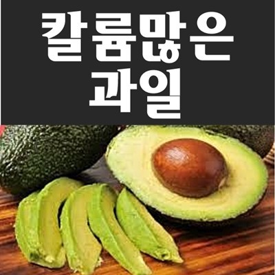

주기율표 제1A족에 속하는 금속 원소로, 포타슘이라고도 한다. 칼륨은 알칼리 금속 원소의 하나로 식물의 재 속에 탄산염으로 들어 있으며, 칼륨 이온은 동식물의 생리에 중요한 역할을 한다. 이온화 경향이 큰 원소로서 산화하기 쉬우며, 물에 넣으면 수소를 내고 용액은 수산화칼륨으로 된다. 불꽃 반응 시에는 자줏빛의 불꽃을 내며 탄다. 지구상에 나트륨에 이어 두 번째로 많이 존재하는 금속이지만 주로 규산염으로서 지각 속에 널리 분포한다. 칼륨은 물과 격렬히 반응하여 수산화칼륨과 수소를 생성하며 연소 또는 폭발하며, 수은과 접촉하면 격렬하게 반응하고 할로겐과 접촉하면 발화한다. 이 때문에 저장이나 취급에도 주의를 요구하는데, 공기중의 수분과 작용하여 수소를 발생시켜 연소하므로 가급적 옥내의 건조한 곳에 저장한다. 칼륨은 세포내액에 가장 다량으로 들어있는 주요 양이온으로 세포막의 전위를 유지하고 세포내액의 이온의 세기를 결정한다.
